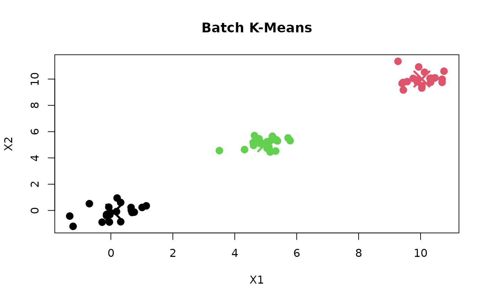

Clusters a numeric matix into k groups.
Value
a list with two components:
'centers': a matrix of clustering centroids (dim: k x ncol(X))
'assignments': an integer vector of clustering labels (1-indexed)
'iterations': an integer of the number of completed iterations
Examples
# simple 2D example with three well-separated clusters
set.seed(42)
cluster1 <- matrix(rnorm(40, mean = 0, sd = 0.5), nrow = 20)
cluster2 <- matrix(rnorm(40, mean = 5, sd = 0.5), nrow = 20)
cluster3 <- matrix(rnorm(40, mean = 10, sd = 0.5), nrow = 20)
X <- rbind(cluster1, cluster2, cluster3)
X <- X[sample(nrow(X)),] # for better initial centers
result <- kmeans_batch(X, k = 3L, max_iter = 100L, tol = 1e-6)
#> iter 1: shift = 0.6887
#> center 1: (0.0960, -0.1355)
#> center 2: (10.0410, 10.0077)
#> center 3: (4.9995, 5.0803)
#> iter 2: shift = 0.0000
#> center 1: (0.0960, -0.1355)
#> center 2: (10.0410, 10.0077)
#> center 3: (4.9995, 5.0803)
result$centers
#> [,1] [,2]
#> [1,] 0.09596001 -0.1354959
#> [2,] 10.04097793 10.0076688
#> [3,] 4.99954464 5.0803004
result$assignments
#> [1] 1 2 3 3 2 3 1 1 2 1 2 1 3 1 2 3 3 1 2 1 1 1 3 2 1 2 2 2 1 1 3 1 3 3 1 1 2 3
#> [39] 3 1 2 2 2 3 3 3 2 2 1 3 2 1 1 3 3 2 2 2 3 3
result$iterations
#> [1] 2
# plot the result
plot(X[, 1], X[, 2],
col = result$assignments,
pch = 16, cex = 1.5,
xlab = "X1", ylab = "X2",
main = "Batch K-Means")
points(result$centers[, 1], result$centers[, 2],
col = 1:3, pch = 4, cex = 3, lwd = 3)
